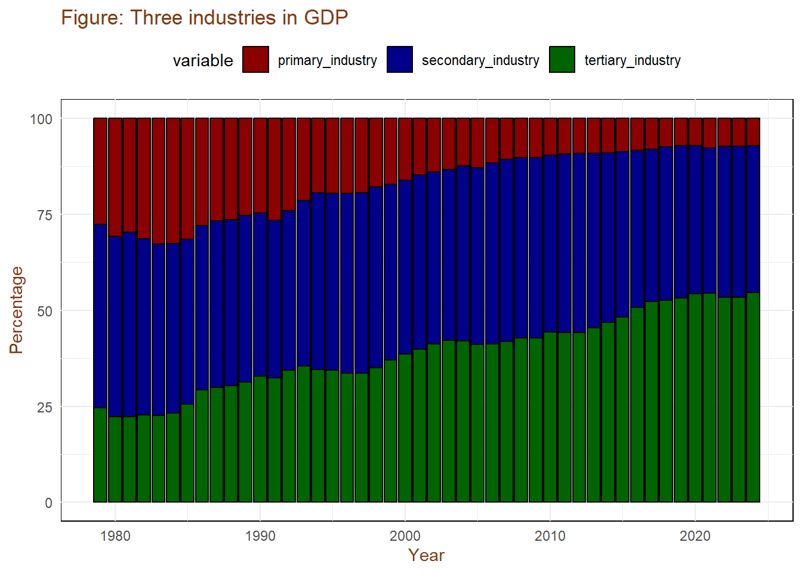
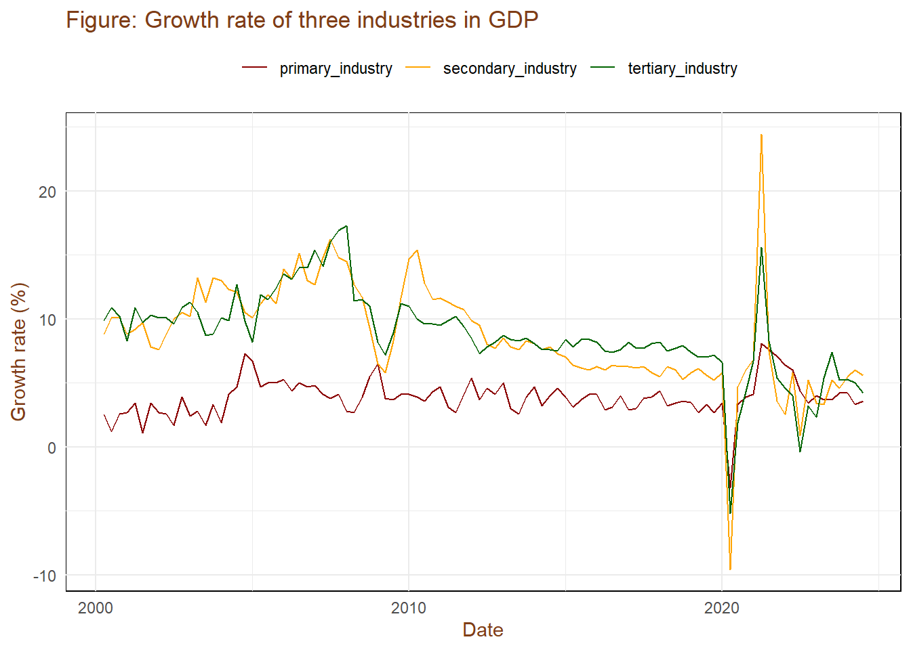
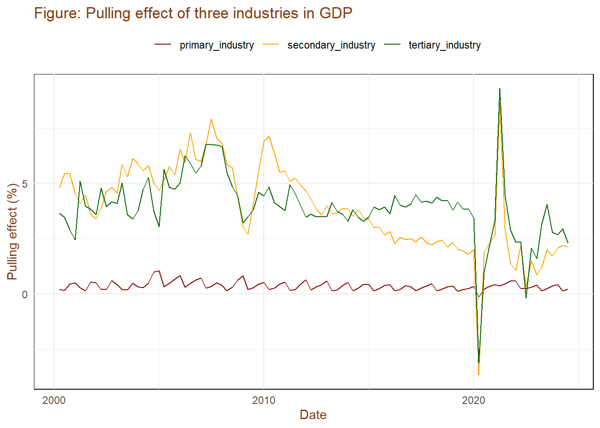
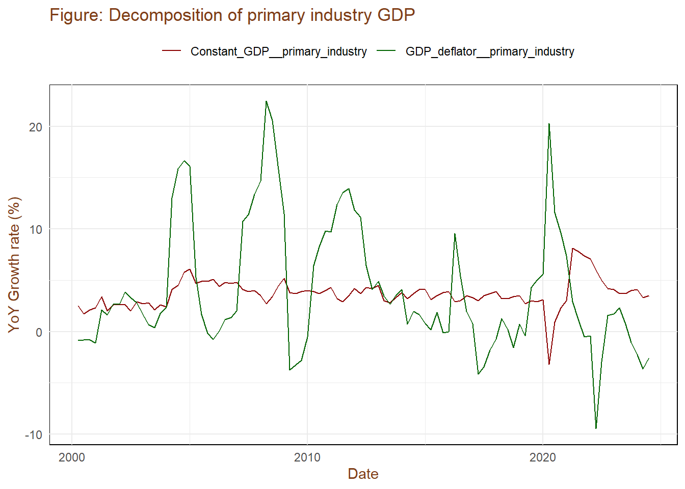
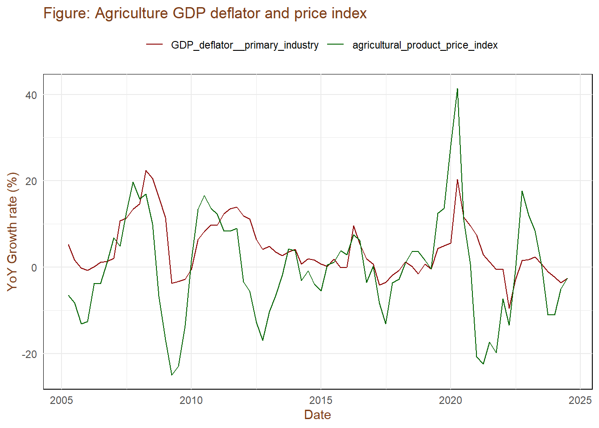
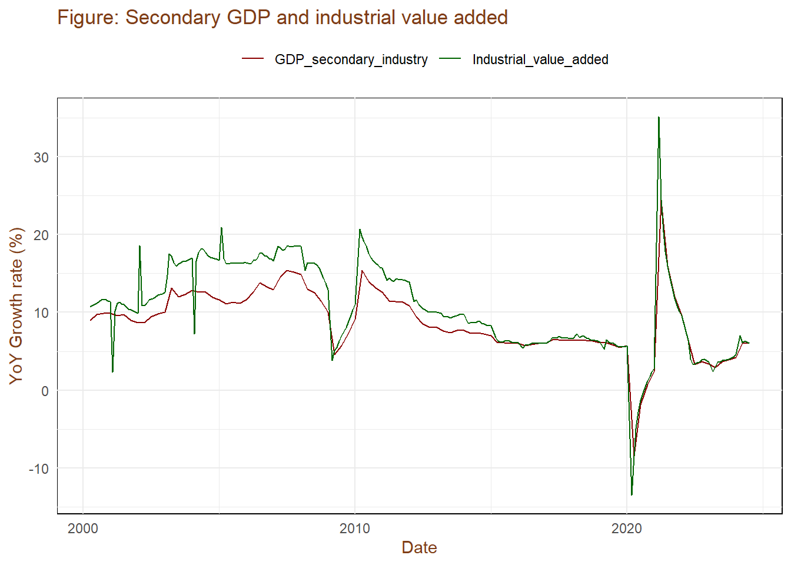
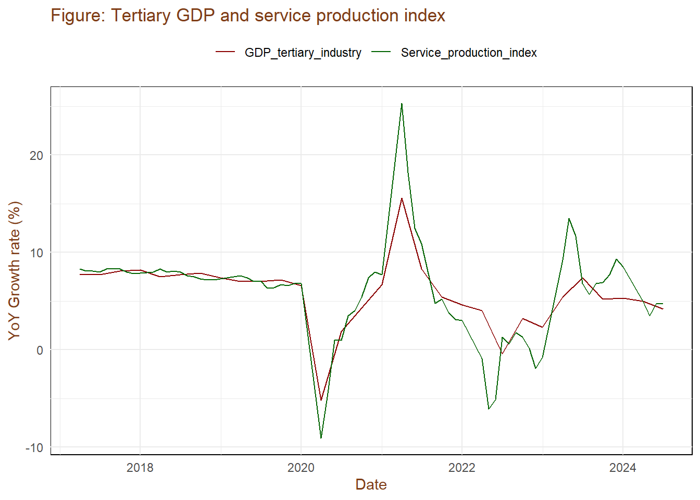
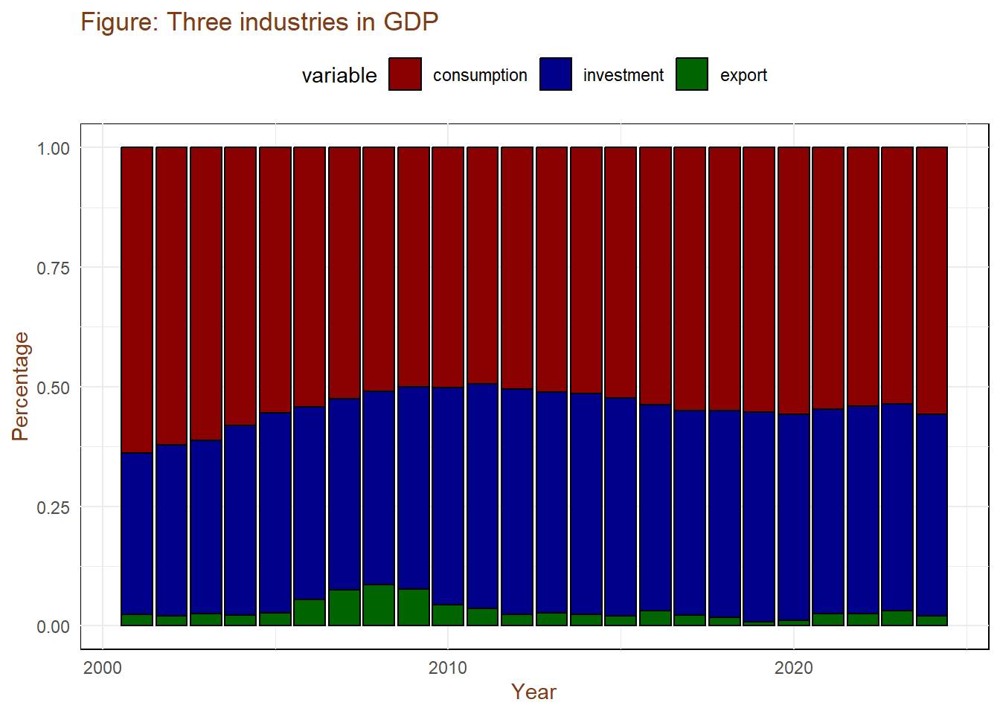
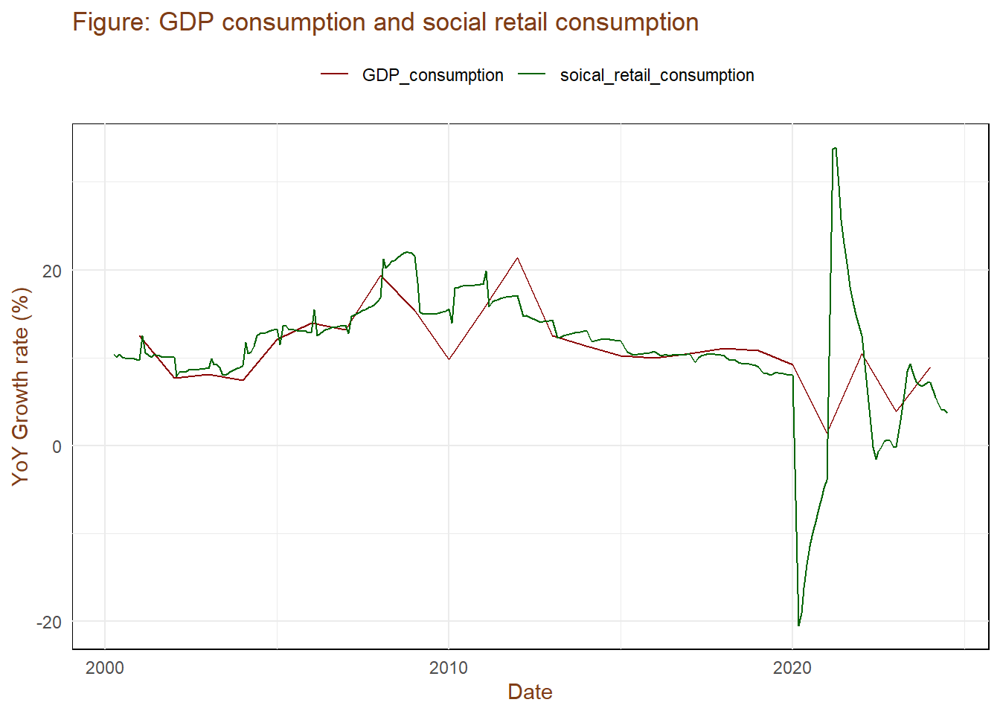
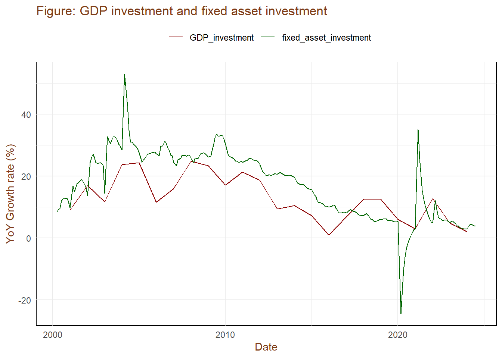

Chapter 2 GDP
GDP data is published quarterly by National Bureau of Statistics of China. NBS announces the absolute value and growth rate of cumulative GDP and the current quarter GDP.
Usually, we don’t care about absolute values. The reasons are: 1. Absolute value of China’s quarterly GDP has obvious seasonality, quarterly GDP increased quarter by quarter. It may result from Spring Festival in the first quarter and crops ripening in the second half of the year. 2. Before 2015, GDP used the cumulative accounting method, the calculated current quarter GDP may not be accurate.
Sequential growth rate is more timely than year-on-year growth rate, but we usually don’t use it. Although NBS released quarterly GDP quarter-on-quarter growth rate after 2011, the time interval is too short.
Therefore, we tend to use the year-on-year growth rate of quarterly and cumulative constant GDP. We can compare the difference between published value and institutional forecasts, historical data, and overseas countries.

Growth rate of cumulative GDP is less volatile than that of quarterly GDP. The extremes in the chart look the same, because they happened to occur in the first quarter.
2.1 Production Method
In practice, we focus on two methods to calculate GDP, namely the production method and the expenditure method. Production method GDP is the sum of the added value of different industries, which can indicate the change of industrial structure. Expenditure method GDP is composed of consumption, investment and exports, we can observe changes in economic demand from it.
First, let’s look at the proportion of the added value of three major industries in GDP. In the long run, the proportion of the tertiary industry continues to rise. By the end of 2023, the proportion of GDP of the primary industry, the secondary industry and the tertiary industry calculated at constant prices is respectively.

We are more concerned with short-term trends, that is, the short-term changes in three industries. NBS does not publish quarterly adjusted GDP for different industries, so we can observe the year-on-year growth rate of constant GDP of the three industries.

Another short-term indicator is the pull effect of the three industries on GDP growth. Here, “Pulling effect = Industrial growth rate * Industrial added value /GDP added value”. The sum of the pulling effect of the three industries is equal to the year-on-year growth rate of GDP.

Further, we need some supplementary indicators to help judge the trend of GDP. Volatility of primary industry’s constant price GDP is little, and the main change comes from the price. The trend of the year-on-year current price GDP of the primary industry and the year-on-year GDP deflator is consistent. One exception is that in the first quarter of 2020, under the COVID-19 epidemic, constant price GDP fell sharply, while the GDP deflator rose sharply.

The commonly used indicator to observe price changes is the agricultural product price index, which is basically the same as the GDP deflator of the primary industry. Among them, the volatile price index of livestock products, especially pork prices.

In the secondary industry, the most important is industrial industry, accounting for about 85%, and the remaining construction industry accounts for 15%. NBS publishes the year-on-year and month-on-month growth rate of industrial added value of subsectors every month. Compared with industrial GDP, industrial added value only counts industrial enterprises above designated size. The next chapter will focus on this metric.

The tertiary industry includes a wide range of industries, and there are no indicators similar to industrial added value. NBS began publishing the year-on-year growth rate of services production index since 2017, but the data range is too short and only covers market-based activities. If we want to forecast the trend of tertiary industry GDP, we need to split into sub-sectors to forecast them in turn, and then add them up.

2.2 Expenditure Method
Under the expenditure method, GDP is divided into three parts. GDP= final consumption expenditure + gross capital formation + net exports of goods and services. At present, consumption contributes most to GDP growth, the following are by investment and net exports.
## Warning: Removed 27 rows containing missing values or values outside the scale range
## (`geom_bar()`).
There are three indicators about consumption in China: 1. Final consumption expenditure in GDP, annually. 2. Household Consumption expenditure in household survey, quarterly. 3. Total retail sales of consumer goods, monthly. The household survey’s consumption data lacks government consumption, so we usually don’t care about it. We pay more attention to the monthly total retail sales of consumer goods. Compared to consumption in GDP, the differences are as follows: 1. Total retail sales of social consumer goods only include retail sales of goods and catering services, excluding service consumption such as education and medical care, and virtual consumption expenditure such as the value of self-housing services. 2. some of the total retail sales of social consumer goods may be included in GDP investment, such as the purchase of construction materials by residents. The following chapters will focus on the discussion.

Capital formation of GDP is divided into gross fixed capital formation and inventory increase, the former accounts for more than 95%, so we usually pay attention to the former. NBS will announce the completed amount of fixed asset investment every month. Compared to capital formation in GDP, the differences are as follows: 1. The completed amount of fixed asset investment only counts non-rural household projects valued larger than 5 million yuan, while the total amount of fixed capital formation has no statistical threshold. The completed amount of fixed asset investment also includes land-related investment such as land purchase fee and old building purchase fee, but the latter doesn’t’ include. 2. The latter includes intangible assets such as intellectual property, while the former does not.

After 2017, GDP gross fixed capital formation included more intangible assets than before, which may be the reason for the divergence. The following chapters will focus on the discussion.
In terms of import and export, we are concerned about two indicators: 1. The monthly balance of import and export trade according to customs statistics. 2. Monthly data on imports and exports of international trade in goods and services released by SAFE. Compared with net exports of GDP, the monthly balance of import and export trade only counts trade in goods, excluding trade in services, and calculates prices on CIF basis, while GDP is calculated on FOB basis. International trade in goods and services monthly data, including trade in goods and services, but usually published at the end of the month, which is not timely. We pay more attention to exports rather than imports, which indicates overseas demand.